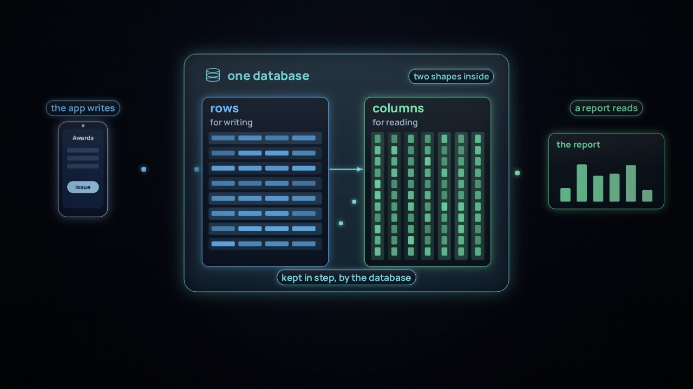

How a data platform works
The Inner Life of Data
Follow one enrolment from a tap on a phone to a decision, through Databricks and dbt.
Learning Data
Start with the overview film, then go deeper, one topic at a time. Your progress stays in this browser.
How a data platform works
Follow one enrolment from a tap on a phone to a decision, through Databricks and dbt.
Each topic goes deeper into part of the overview film.
From the chapter The sketch

Data modelling
Two trusted numbers disagree. When does a simple model need more precision, and how do you use a reference model without copying it?
From The sketch, in depth: the series From words to data, seven films, in order

Film 1 of 7 · Language and meaning
Four offices, four numbers, one word. Before you can count anything, you have to agree what it is.

Film 2 of 7 · Models and systems
Clay, wax, paper, a digital key: the materials changed, the idea didn't. Model it once, and hold every system up to that.

Film 3 of 7 · Shapes for data
One set of facts, two shapes: one built to write each award, one built to read ten years of them.

Film 4 of 7 · Shapes for reading
Star, vault or one wide table? Each shape has a job and a place. Choose per question, not per fashion.

Film 5 of 7 · Hybrid databases
One database that writes and reads. It removes the copy, not the model.

Film 6 of 7 · Meaning and AI
An assistant answers from the meaning it can read. Glossary, taxonomy, ontology and semantic layer stack.

Film 7 of 7 · Keeping meaning current
Three dashboards, three numbers for one measure. The agent recommends, people approve, and everything is versioned.
From From words to data, into the weeds, for analytics engineers: the series In the weeds of data crafting, with dbt, in order

Film 1 of 9 · The series and its method
dbt calls every query a model. The data model is the blueprint: declared beside the code, and checked by the tests.

Film 2 of 9 · Scope and owners
A model has no edge until a question gives it one. Model only what the question touches, and name who owns each meaning first.

Film 3 of 9 · Identity and keys
One learner, three keys, and a look-alike. Rules match most of them; a person decides the rest, and the decision becomes data and a test.

Film 4 of 9 · Grain and time
Twelve on census day, nine today: both right. Say what one row is and which day it describes, before any SQL, and test both.

Film 5 of 9 · Contracts and tests
Every gap gets a decision. Promise it in a contract; prove it with a test, written before the code it checks.

Film 6 of 9 · Layers and CTEs
Four layers turn the tests green. Each layer has one job; each CTE, one step; and the rule is written once.

Film 7 of 9 · Domains and ownership
Each fact's meaning has an owner. Owners publish a public, versioned core; consumers build on it, never on each other's marts.

Film 8 of 9 · Agents and review
An AI agent drafts in minutes. It follows rules written in the project, shows the query behind every claim, never weakens a test, and people approve.

Film 9 of 9 · Documentation and versions
Every copy of a fact is a chance to drift. One home per fact, everything else generated, and a breaking change arrives as a new version with a date.
From Refining with dbt and Gold

Changes and data contracts
A new enrolment status reaches the data overnight, and each side of the university saw only half of the change.

Data quality checks
Applications jump 38% overnight. A test on the total decides whether anyone acts on the number.
Start with the overview film and its labs.
Data modelling: A Sharper Sketch.
Changes and data contracts: Silent change. Data quality checks: Too good to be true.